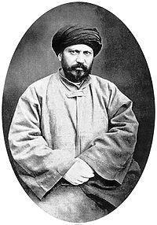

Cemaleddin Efgani (1838-1897)

Cemaleddin Efganî, Kasým 1838'de Kabil yakýnlarýndaki Esadabad'da doðdu.Efgani, ilk eðitimini önemli bir bilgiye ve ilme sahip olan babasý Safder'den almýþtýr. Kabil'de; medrese tahsilini tamamladýktan sonra Hindistan'a gitmiþ ve oradan da hac farizasýný yerine getirmek üzere kutsal beldelere gitmiþtir. Bu arada Necef ve Kerbala'da bir süre kalarak ders almýþ ve daha sonra da Kabil'e dönmüþtür. Daha sonra Hindistan'a geçmiþtir. Burada sömürgeci Ýngilizlere karþý halký uyandýrmak maksadýyla; "Ey Müslümanlar! Siz insan deðil de sinek olsaydýnýz výzýltýnýz Ýngilizlerin kulaklarýný saðýr ederdi! Ey Hintliler! Sizler su kaplumbaðasý olsaydýnýz Ýngiltere adasýný yerindan söker denize batýrýrdýnýz!.." demek suretiyle onlarý cesaretlendirmeye çalýþmýþtýr.
Hindistan'dan Mýsýr'a geçmiþ ve orada yaklaþýk kýrk gün kaldýktan sonra Ýstanbul'a gelmiþtir (1870). Ýstanbul'a gelir gelmez önceden hakkýnda bilgi sahibi olunmuþ olmalý ki, kýsa bir süre içinde önemli görevlere getirilmek suretiyle özel alaka görmüþtür. Baþta sadrazam Ali Paþa olmak üzere, o zaman yönetimde olan Tanzimatçýlarýn ileri gelenlerinden olan Fuat Paþa, Saffet Paþa, Münif Efendi ve Hoca Tahsin Efendi ile görüþerek yakýn münasebet kurma imkanýný bulmuþtur. Ayný zamanda Meclis-i Maarif ve Encümen-i Daniþ azalýklarýna getirilmiþtir.
Efgani, Ýstanbul'da aldýðý resmi görevlerin dýþýnda halka açýk konferanslar vermeye baþlamýþ, bir konfesansýnda peygamberlerle filozoflar arasýnda benzerlik kurmasý tepkilere yol açtýðý gibi, þahsýna karþý olanlarýn da kýþkýrtmalarýyla tepkiler artmýþ ve konferanslarýna son vermek zorunda kalmýþtýr. Dönemin Adliye nazýrý olan Cevdet Paþa, Efganiyle görüþtüðü gibi konuþma metnini de incelemiþ ve daha sonralarý Sultan Abdülhamid'e sunduðu raporunda yanlýþ anlaþýlmanýn sözkonusu olduðunu belirterek Efgani'den yana tavýr koymuþtur. Bu yanlýþ anlaþýlmada Efgani'nin yeterli olmayan Türkçesinin de etkisi olmuþtur.
Efgani, kýsa bir süre için 1871 yýlýnda Mýsýr'a gittiyse de, Baþvezir Riyad Paþa'nýn giriþimleriyle yakýn alaka, maaþ tahsisi ve talebelerinin çoðalmasýnýn etkisiyle Kahire'de sekiz yýl kaldý. Mýsýr'da mason localarýyla girdiði iliþki ve bazý mason localarýna üye olmasý tepkilere yol açmýþtýr. Diðer yandan devlet idarecilerini yanlýþ hareketlerinden dolayý eleþtirmesi, Ýngilizlerin Mýsýr'daki faaliyetlerinden rahatsýz olmalarý ve bu rahatsýzlýklarýný yeni hidiv olan Tevfik Paþa'ya iletmelerinden sonra Mýsýr'dan ayrýlmak zorunda kalmýþtýr (1879). Buradan ayrýlýrken büyük bir iz ve geride çok sayýda talebe býrakmýþtýr.
Efgani, Mýsýr'dan sonra sýrasýyla Hindistan,Amerika ve Ýngiltere'yi dolaþtýktan sonra 1883 yýlýnda Paris'e geçerek Muhammed Abduh ile birlikte Urvetü'l-Vüska adlý Arapça bir gazete yayýnlamaya baþlamýþtýr. Müsümanlarýn uyanmasýný saðlamak, doðunun sömürgecilikten kurtarýlmasýný gaye edinen bu ikili, fikirlerini gazete yoluyla yaymaya çalýþmýþlardýr.
Efgani, gazetesinin kapanmasýndan sonra bir süre daha Paris'te kalmýþ ve Ýran Þahý Nasrüddin'in daveti üzerine bu ülkeye gitmiþtir. Baþlangýçta, Ýran yönetimiyle iyi iliþkiler kurmuþ, halktan da yakýn ilgi görerek etrafýnda talebeler biriktiyse de özel sohbetlerinde Þah'a, halkýn yönetime daha fazla katýlmasýný tavsiye etmesi aralarýnýn bozulmasýna sebep olmuþ, ardýndan kendini tehlikede hissedince buradan da ayrýlmýþtýr. Bir süre sonra Þah'a suikast düzenlenip öldürülmesinden Efgani de sorumlu tutulmuþtur. Bu sebeple Ýran, Ýstanbul'da bulunan Efgani'nin kendilerine teslim edilmesini isteyecek ancak, Sultan Abdülhamid onu iade etmeyecektir.
Efgani, Ýstanbul'da yerleþmek üzere Sultan Abdülhamid tarafýndan davet edilmiþtir. Ýstanbul'a geldikten (1892) sonra iyi karþýlanarak kendisine; Teþvikiye'de bir ev, araba ve maaþ tahsis edilmiþtir. Vefatýna kadar Ýstanbul'da kalmýþ ve1897'de burada vefat etmiþtir. Maçka'daki þeyhler mezarlýðýna defnedilen Efgani'nin naaþý daha sonralarý Afganistan Hükümetinin isteði üzerine bu ülkeye taþýnmýþtýr (1944).
Fikirleri
Yaþamýþ bulunduðu asrýn en önemli özelliði; Ýslamiyetin ve Müslümanlarýn bir bakýma topyekün bir hücuma uðramasý, topraklarýnýn bir bir istilaya uðrayýp Müslümanlarýn da sömürge durumuna düþmeleridir. Bu itibarla Müslümanlarýn bu iþgallere karþý koyup sömürge olmaktan kurtulma fikrinin savunucularý arasýnda Efgani önemli bir yer almýþtýr. Ýttihad-ý Ýslam fikrinin yayýlmasýný sömürge politikasýna aykýrý bulan Ýngiltere, karþý tedbirlere baþvurmuþ, bu arada Efgani'yi de yakýn takibe alarak faaliyet alanýný daraltmaya çalýþmýþtýr.
Efgani'nin Þii olduðunu ileri sürenler daha çok doðduðu yere dayanarak bu fikri ileri sürmüþler ancak, bu tezlerini Efgani'nin fikirleriyle teyid etmemiþler veya edememiþlerdir. Diðer yandan, en meþhur takipçisi olan Muhammed Abduh'tan istifade ederek yola çýkanlar O'nun samimi ve Sünni akideye sahip olduðu hükmüne varmýþlardýr. Bunlarýn dýþýnda Efgani'yi dinsizlik ve sapýklýkla itham edenler olmuþ ama, bu iddialarýnýn mesnedini gösterememiþlerdir. Çünkü, yazdýðý eserlerin önemli bir kýsmýný materyalist felsefenin reddi ve insanlýða verdiði zararý ortaya çýkarmaya çalýþmýþtýr.
Efgani'ye göre insanlýðýn ilim, ahlak ve medeniyette yücelmesiyle beraber dünya ve ahiretteki saadetini kazanabilmesi þu esaslara baðlýdýr:
1-Doðru düþünme, gerçeði bulmada mani teþkil eden hurafelerden arýnýp, Ýslamýn tevhid ve tenzih ilkeleriyle hareket etmek.
2-Fert ve toplum farkýný gözetmeden, birilerine üstünlük vermeyip diðerlerinin de mükemmelliði (peygamberlik hariç her þeyi) yakalayabileceðine inanmak, ýrk ve sýnýf üstünlüðü yerine akýl, ruh ve fazilet gibi erdemleri yerleþtirmek.
3-Ýslamý diðer dinlerden ayýran en önemli özelliðinden olan ve çok deðer verdiði bir esas olan; bilgileri saðlam delillere dayandýrýp zan ve vehimlere meydan vermemek.
4-Ýstisnasýz her toplumda eðitime özel önem vermek, bunu saðlamak için de her toplumun kendi alim ve mürþidini yetiþtirebilmesine imkan saðlamak. Bu konuda, Ýslamiyetin farz kýldýðý ilim öðrenme konusuna dikkat çeker. (Hayreddin Karaman; Cemaleddin Efgani, TDV. ÝA. 10. C. s. 461).
Efgani'ye göre içtihat kapýsý açýktýr. Siret, hadis, icma-kýyas hakkýnda bilgisi olup Arapça'yý bilenler içtihad yapabilirler. Ona göre Kur'an-ý Kerim'de, devlet yönetiminden, yöneticilerin görev ve sorumluluklarýna, insani meselelerin yanýnda uzaydaki gök cisimlerinin arasýndaki iliþkilere kadar pek çok þey hakkýnda açýk veya kapalý bilgiler mevcuttur. Bunlarý doðru olarak anlayabilmek, aklýn ve ilmin verilerine uymakla mümkündür.
Efgani'ye göre, Batýlýlar Þarklýlardan daha zeki, daha kabiliyetli deðiller. Güç ve hakimiyetin sýrlarýný keþfeden Batýlýlar, Doðulularý esaretleri altýna almýþlardýr. Batýlýlar, ülkelerinde okuyup ilerlemenin ve gücün sýrlarýný öðrenememiþ Doðululardan, dejenere olmuþlardan istifade etmektedirler. Müslümanlarýn gerileme sebeplerini de þu þekilde tesbit etmiþtir:
1-Hilafetin saltanata dönüþmesi, dirayetsiz kiþilerin halife olmasý.
2-Din ve milliyetin zayýflamasýyla birlikte halifelerin yabancýlarý devlet hizmetinde istihdam etmeleri.
3-9. ve 10. yüzyýllarda yayýlan batýni ve zýndýklarýn safsatalarý.
4-Müslümanlarýn heyecanlarýný kýran ve hamlelerini durduran cebir inancýnýn yayýlmasý.
5-Hainler tarafýndan uydurma hadis ve israiliyatýn dini kitaplara sokulmasý, temiz inançlarýn kirletilmesi.
6-Eðitim ve öðretime gereken önemin verilmeyerek, hurafelere karþý koyacak seviyeye yükseltilememesi.
7-Doðuda Moðollarýn, Batýda ise Haçlýlarýn saldýrýlarýnýn sonucu meydana gelen yýkým ve tahribatlar.
8-Müslümanlar arasýndaki birliðin zedelenmesi ve meydana gelen bölünmeler.
Ýttihad-ý Ýslam konusunda, halifelik, hac ve din baðý üzerinde önemle durur. Din baðý Ýslam birliði için gerekli olduðu gibi milli kimliklerini muhafaza etmek isteyenler için de gereklidir. Din baðý kurulamadýðý takdirde ýrki manadaki birliði kurmak da imkansýzlaþýr. Müslümanlar din baðýna sýmsýký sarýlýp birbirlerini gözetirken, baþka din ve inanca sahip olanlara da saygýlý olmalýdýrlar. Ýnananlarýn manevi merkezi Mekke ve Medine'dir.
Cemaleddin Efgani ve Bediüzzaman
Bediüzzaman Hazretleri, Mardin'de Cemaleddin Efgani'nin "siyasette muktesit meslek"i ondan öðrendim (Beyanat ve Tenvirler, s. 105) dediði talebesiyle görüþüp fikirleri hakkýnda bilgi sahibi olmuþ, Ýttihad-ý Ýslam'da seleflerini sayarken, Efgani'nin ismini de zikretmiþtir. (Tarihçe-i Hayat, s. 39, 59)
Efgani'nin önemle üzerinde durduðu milliyet konusuna Bediüzzaman Hazretleri de deðinerek, milli kimliklerin korunmasýnda dinlerin rolüne deðinmiþtir.
Hilafet konusunda da benzer fikirleri taþýrlar. Efgani, gerçek halifeliðin dört halife döneminde uygulandýðýný, halifelerin, akýl ve fazilet sahibi olup idari ehliyete sahip olmalarý gerektiðini söyler. Bu makama en uygun olan þahsýn getirilebilmesi için ümmetin katýlýmýnýn saðlanmasý gerekir. Bediüzzaman Hazretleri, Hz. Hasan'ýn (ra) altý aylýk halifeliðini de hesaba katarak, bundan sonra halifeliðin mecrasýnýn deðiþtiðini ifade eder. Bu ilk halifelerin bir bakýma reis-i cumhur olduklarýna dikkat çeker. "Hulefa-i Raþidîn hem halife, hem reis-i cumhur idiler. Sýdkîk-ý Ekber (r.a.) Aþere-i Mübeþþereye ve Sahabe-i Kirama elbette reis-i cumhur hükmünde idi. Fakat manasýz isim ve resim deðil, belki hakikat-ý adaleti ve hürriyet-i þer'iyeyi taþýyan mana-yý dindar cumhuriyetin reisleri idiler." (Beyanat ve Tenvirler. s. 275)
Ellidokuz yýllýk bir ömür boyanca bir çok faaliyetin içinde bulunup dünya çapýnda bir þöhrete ulaþan Efgani'nin görüþlerinden ve eserlerinden çok, yaþantýsý tartýþma konusu olmuþ ve çok sert eleþtirilere maruz kalmýþtýr. Kiþiliði de önemli olmakla beraber hala fikirleri net olarak anlaþýlmayý beklemektedir. Ama, Ýttihad-ý Ýslam konusunda fikir ve eylemlerinde samimi olduðu aþikardýr.